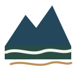

山を読む
場所、境界、接道、樹種、管理履歴。分かることを増やす。
地図権利現地

ネイチャーキャピタル・リアルエステイトNature Capital Real EstateNATURE CAPITAL REAL ESTATE
「どこにある？」「誰が管理する？」「この先どうする？」。森林・里山の小さな疑問を、現地と地域の仕事につなげながら、管理・活用・売却の選択肢に変えていきます。
初めての方へ
初回のインタビューは無料です。費用がかかる作業は、内容と金額を先にお伝えし、ご了承いただいてから進めます。
お申し込みから3営業日以内に担当者からご連絡し、日程を決めます。電話・オンライン・対面で、山の場所や相続の状況、困っていることをお聞きし、お手元の資料から分かることを一緒に確認します。
お話をもとに、分かったこと・まだ分からないこと・考えられる選択肢を1枚の整理メモにまとめてお渡しします。現地確認や調査、専門家への相談が必要な場合は、その内容と費用をお伝えします。ご依頼いただくかは、それから決めてください。
ご納得いただいた内容だけを進めます。ご了承なく費用が発生することはありません。
私たちの考え方
山林の取引や管理を難しくしているのは、土地の価格だけではありません。場所や境界、所有者、接道、規制、管理費用が分からないことが、所有者にも買い手にも大きな不安になります。
山の場所や境界を調べ、管理費用を見積もる「事実」。誰かの役に立つ形で山を託したい、地域に仕事を残したいという「願い」。その両方を、一つの相談で整理します。
高値売却を約束するのではなく、管理を続ける、活用する、売却を検討するといった選択肢を判断できる状態にすること。それが、私たちの考える最初の価値化です。
場所、境界、接道、樹種、管理履歴。分かることを増やす。
安心して任せたい。地域に仕事を残したい。願いを出口にする。
その他の方へ
初回インタビュー
初回インタビューは無料です。所在地、相続の状況、手元の書類、現在困っていることをお聞きします。お申し込みから3営業日以内（土日祝日を除く）に、担当者からご連絡します。
無料相談を申し込む